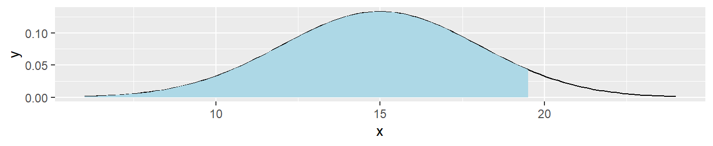
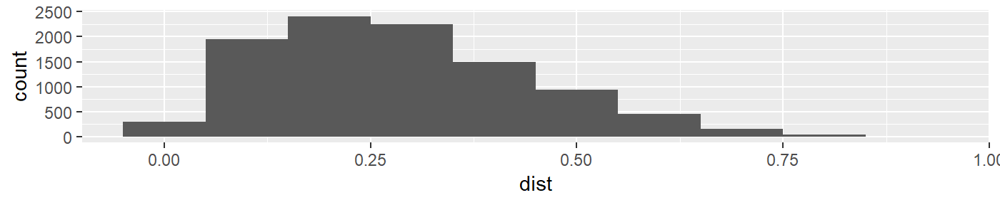
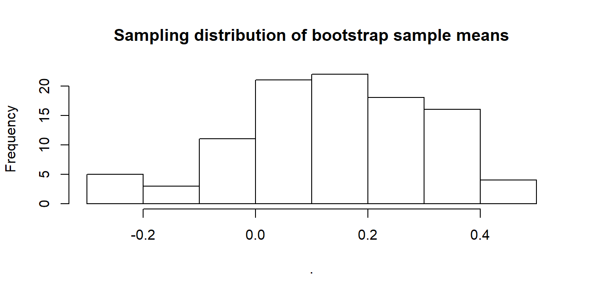
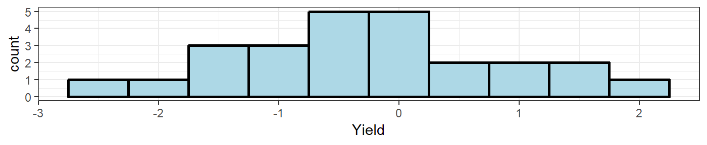

statsfoRstudents
Eryn Blagg, Gulzina Kuttubekova, Charlotte Roiger, Joe Zemmels
2019-05-10
Source:vignettes/statsforstudents.Rmd
statsforstudents.RmdYou can install the \(\texttt{statsfoRstudents}\) package by running the following in your console.
devtools::install_github("https://github.com/jzemmels/statsfoRstudents")While this vignette will show how the various functions within this package can be used from the console, the purpose of this package is mainly to service the shiny app that accompanies it. It is highly recommended to first launch the shiny app to follow along with this vignette. Assuming that you are in the package directory, you can launch the app by running the following in your console.
statsfoRstudents::runShiny()Eryn
Errors are something that as a statistician we should all be aware of, not only that they occur, by when and were they might occur. As an instructor for introduction to statistics, one aspect of my class that always seems to trip students up is, Type I and Type II errors. Not only do the definitions seem hard to grasp, but also thinking of type of errors as a visual part of a normal distribution. We define Type I error to be, the rejection of a true null hypothesis, while a Type II error is the failure of rejecting a false null hypothesis, in favor of an alternative. Although in introductory statistics, Type I and Type II errors only make up a small part of the coarse material, this small facet of statistics extends to more advanced statistical thinking, even helps determine rejection and acceptance regions for more advance testing models. In order to help students associate Type I error with the rejection region of a Null Hypothesis distribution, this app plots the given distribution with your a specific null mean and sd, then takes that information, plotting a specified alpha level rejection and acceptance regions. This app uses the function ploterrors(), which will be explained in detail below.
ploterrors()
The function, ploterrors(), takes the users input, specifying a mean and standard deviation to plot a normal distribution density. This underlining normal distribution then takes an inputted alpha level and a direction of the alternative hypothesis test to graph the corresponding rejection, where a Type I error may occur, stacked on top of a density plot of the acceptance region. These plots are exported in a list of plotly arguments.
ploterrors(means =15,sds=3,alpha=.25,direction=">")## [[1]]
##
## [[2]]
The intent of this function is to give the user a way to visually determine where an error may occur, either in the critical region, or in the acceptance region. This function is used by itself in the “Type of Errors” tab of the shiny app.
Charlotte
As a STAT 101 teaching assistant, I see many students struggle to grasp then immediately forget how to properly analyze a histogram. While this very small facet of statistical education may seem trivial we use descriptions of histograms to diagnose whether distributions can be considered Normal. This in turn helps fuel a greater understanding of the assumptions required for basic hypothesis testing and whether inferences can be generalized. Therefore I have devised a very basic quiz-type app that will test whether students can correctly identify certain attributes of a histogram across three different categories: Modality, Shape, and Outliers. All three functions associated with this portion of the shiny app have very similar structure and functionality so for the sake of brevity I will only provide a walk-through of plotModal().
plotModal()
The function plotModal() takes a random number as an input and plots either a unimodal, bimodal, or multimodal distribution. No other user input is required and the way the app functions, the random number that is fed into plotModal() is generated from the press of the “New Distribution” button. This function technically returns a list of two objects the first of which is the label marker of what type of distribution is being plotted. This is then used to test whether the user of the app has selected the correct output. The second object of the list is a ggplot object that shows the plot the distribution generated. Below is an example with arbitrary “random number” set equal to 2, this shows the plot portion of the function.
plotModal(2)[[2]]
Joe
Last semester many of my STAT 101 students lacked an understanding of what they were doing when performing a hypothesis test. Many would simply memorize the procedure and formulas while lacking the intuition for how the procedure and formulas function. This was the inspiration for part of my contribution to this project. I wanted to create a visualization tool that students could use to graph a normal distribution density, specify a significance level and alternative hypothesis direction, and plot an observed \(z\)-statistic. My hope was that having the ability to actually visualize the acceptance/rejection regions under a normal distribution density might lead to a deeper understanding than simply checking whether the \(p\)-value is less than .05.
plotNormal()
The function \(\texttt{plotNormal()}\) allows the user to graph a normal distribution density by specifying a mean and standard deviation as well as an observed value to be graphed as a blue vertical dotted line. It also lets the user specify the significance level of their test, which will be visualized as a shaded region under the density curve, as well as the direction of their alternative hypothesis. While not shown in this vignette, the user can also indicate whether they want a ggplot object to be returned or a more interactive plotly object.
The intent of this function is to give the user a way to visually determine whether their observed value falls in the critical region. This function is used by itself in the “Normal Plot” tab of the shiny app, but I believe its most useful inclusion is in the “Hypothesis Test Challenge” tab.
plotNormal(mu=2,sigma=4,alpha=.1,obs=3,direction="<",plotly = FALSE)
Hypothesis Test Challenge
Along with the \(\texttt{plotNormal()}\) function, another idea that I had was to make a Madlibs-style hypothesis test “game” in which students could practice the hypothesis test procedure while receiving real-time feedback. This is implemented in the “Hypothesis Test Challenge” tab of the shiny app. Under the hood, this app is simply making a call to a function, \(\texttt{hypTest_prompt()}\), that randomly selects from a collection of hypothesis test prompts. Below is one example of using the function.
set.seed(4282019)
question <- hypTest_prompt()
question$prompt #there are other elements of the list not shown for sake of space## [1] "Blood glucose levels for obese patients have a mean of 100 with a standard deviation of 15. A researcher thinks that a diet high in raw cornstarch will have a positive or negative effect on blood glucose levels. A sample of 30 patients who have tried the raw cornstarch diet have a mean glucose level of 140. Test the hypothesis that the raw cornstarch had an effect if alpha = .05."The shiny app uses shiny’s \(\texttt{renderUI()}\) function to generate select/numeric input objects with which the user can interact. The app will give feedback based on whether the user’s input agrees with the correct answer stored in the list returned by \(\texttt{hypTest_prompt()}\).
Once the user gets to the “Compare Test Statistic to Null Distribution” step of the procedure, they can visualize the null distribution (which should be a standard normal since they’re taught to calculate \(z\)-statistics) to determine whether they should reject or fail to reject the null hypothesis. This is just making a call to the \(\texttt{plotNormal()}\) function using the user input up to this point as arguments.
Sampling Distribution of Sample Means Visualization Tool
The “Sampling Distribution of Sample Means” tab in the shiny app was inspired by a similar app that STAT 101 students periodically use in their lab assignments. This app is meant to demonstrate to students the fact that for a fixed sample size, the sampling distribution of sample means converges in distribution to a normal distribution with mean equal to the population mean, \(\mu\), and standard deviation equal to the population standard deviation divided by the square root of the sample size, \(\frac{\sigma}{\sqrt{n}}\). The main issue that I had with the original app was that it was written in JMP, which I prefer to avoid if at all possible. I thought that the tool would be more accessible to students if they could use it without having to install JMP.
This tool relies on 4 simple functions to generate, aggregate, and plot random normal data. The function \(\texttt{randomSample()}\) generates just that, a data frame containing a set of random samples from a normal distribution with a specified mean, standard deviation, and sample size.
samp <- randomSample(mu=0,sigma=1,sampleSize=25,numSamples=100)
head(samp,4)[1:5] #not a great column naming scheme, but consistent.## X1 X2 X3 X4 X5
## 1 -1.9741866 0.6768836 1.32490097 -0.35739037 0.07565934
## 2 0.2821361 0.9937552 0.18090795 -0.09687075 1.40810184
## 3 -0.2718143 -2.1002127 0.41383587 -0.03738673 0.23499719
## 4 -0.1370817 -0.5336452 0.07101791 -1.24506904 -0.28910202The function \(\texttt{randomSample_histogram()}\) takes the last of these random samples and plots the data as a histogram.
randomSample_histogram(sampleData=samp,binwidth=.5,variableName="Yield",plotly=FALSE)
From here, we can use the \(\texttt{updateSampleMeans()}\) function to create a new dataframe containing the sample means from the \(\texttt{samp}\) dataset created above.
means <- updateSampleMeans(sampleData=samp)If the \(\texttt{sampleMeans}\) argument of this function is left blank, a new dataframe will be created containing sample means. However, the user can pass a previously created data frame containing sample means that will be updated with the sample means of the samples within \(\texttt{sampleData}\).
updatedMeans <- updateSampleMeans(sampleData=samp,sampleMeans=means) #append the same 100 sample means to the means df
all.equal(updatedMeans[1:100,1],updatedMeans[101:200,1]) #first 100 means are the same as the last 100 means## [1] TRUEThe dataset “sampleData_means” that comes with this package was created in a similar fashion as above, but with a population mean of 5 and population standard deviation of 2. We can use the \(\texttt{sampleMeans_histogram()}\) function to plot the sample means data as a histogram.
data("sampleData_means")
sampleMeans_histogram(sampleMeans=sampleData_means,binwidth=.1,variableName="Yield",plotly=FALSE)
In the “Sampling Distribution of Sample Means” tab of the shiny app, you will find these 4 functions implemented in a format consistent with the JMP tool on which this applet is based. The \(\texttt{randomSample_histogram}\) and \(\texttt{sampleMeans_histogram}\) functions are called once the user clicks the “Draw Additional Samples” button to show two histograms. There are also summary tables describing different aspects of the drawn samples printed next to the two histograms. At the bottom of the page, the user can click the “Show/Hide Questions” button to toggle a list of questions meant to stimulate reflection on what happens to the shape of the means histogram when more samples are drawn. For example, students will hopefully realize through these questions that the standard deviation of the empirical sampling distribution of the sample means gets closer to \(\frac{\sigma}{\sqrt{n}}\).
Future Work
(Joe) I would love to add \(t\)-distribution alternatives to all of the tools that I’ve created so far since this is a topic covered in STAT 101.
(Eryn) I would like to add some more fuctionality to my Errors app, but I would also like to have a tool that has a game similar to Joe’s work, but for differences in proportions. Most my students have no idea that they are relatively the same thing as testing a single mean, or proportions.